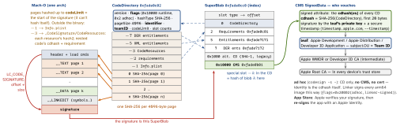

security-build · folio
In one line: A signature is a SuperBlob appended to __LINKEDIT and located by
LC_CODE_SIGNATURE. Its heart is the CodeDirectory: a SHA-256 hash of every
4 KiB page of the file (code slots) plus hashes of Info.plist, requirements,
resources and entitlements (special slots). The hash of the CodeDirectory — the cdhash —
is what a CMS signature from your certificate signs, so one signature covers every byte;
the kernel re-hashes each page as it is paged in.
Download PDF Print view LaTeX source


Signing
codesignhashes the file in 4096-byte pages up tocodeLimit, writes the CD, requirements and entitlements, then the CMS over the cdhash. Universal binary: one signature per arch, different cdhashes (--arch arm64).- Hash agility: macOS ≤ 10.11 needed a SHA-1 CD too (
0x1000alternate slot); since 10.12 a single SHA-256 CD.CodeDirectory v=20500 … hashes=14+7= 14 code pages + 7 special slots. - Entitlements are signed in twice: XML plist (slot 5/-5) and DER (7/-7, the format the OS parses; required on iOS 15+(unverified)). Old signatures without DER must be re-signed; App Store builds already are.
- Bundles: Info.plist and resources are outside the Mach-O, so they are sealed by hash — edit one PNG and the seal breaks (“a sealed resource is missing or invalid”).
- Nested code signs inside-out: dylibs/frameworks → XPC services, app extensions, helpers → the app last, because the outer seal records each inner cdhash. Sign the app first and any inner re-sign invalidates it. Xcode does the order; by hand never sign with
--deep(it pushes one set of entitlements/options onto everything) —--deepis for verify only. - Code must sit where code belongs (
Frameworks/,MacOS/,PlugIns/); a Mach-O inResources/is sealed as data, not signed as code.
Requirements — the code’s identity (macOS)
A requirement is a boolean expression over a signature; the designated
requirement (DR) says “if you see me again, this is how you know it’s me”. TCC grants, keychain ACLs and XPC peers (setCodeSigningRequirement) store the DR, not a hash — that’s how v1.3 inherits v1.2’s microphone permission.
designated => identifier "com.example.app" and anchor apple generic
and certificate leaf[subject.OU] = "ABCDE12345" # team
anchor apple and identifier "com.apple.TextEdit" # Apple's own
cdhash H"ff19a91b..." # this exact build only - brittleExample — reading and making a signature
codesign -dvvv App.app # CDHash, Authority chain, TeamIdentifier
codesign -d -vvvvvv App.app # + every slot hash (page size 4096)
codesign -d --entitlements :- App.app # raw XML ("bplist00" = broken)
codesign -d -r- App.app # designated => ...
codesign --verify --deep --strict -vvv App.app # notarization-grade check
codesign -v -R \
'=anchor apple generic and identifier "com.example.app"' App.app
codesign -s - -f tool # ad hoc re-sign (after lipo/patch)
codesign -s "Developer ID Application: Alice (ABCDE12345)" \
-o runtime --timestamp --entitlements app.entitlements -f App.appHow it is enforced
- At exec / mmap: the kernel loads the blob, checks each CD hash against the CMS’ cdhash list; AMFI (AppleMobileFileIntegrity) decides if the signer may run this: platform binaries by cdhash in the trust cache, third-party code by certificate + provisioning profile (entitlements ⊆ profile) via
amfid. - At page-in: every page faulted in from a signed file is hashed and compared to its code slot. Mismatch +
CS_KILL→ SIGKILL (crash “CODESIGNING”(unverified)). Lazy: a tampered page that never runs is never noticed. - Process flags (
cs_blobs.h):CS_VALID0x1 ·CS_ADHOC0x2 ·CS_GET_TASK_ALLOW0x4 ·CS_HARD0x100 (refuse invalid pages) ·CS_KILL0x200 ·CS_REQUIRE_LV0x2000 (library validation) ·CS_RUNTIME0x10000 (hardened runtime) ·CS_LINKER_SIGNED0x20000. - Apple silicon: macOS won’t run unsigned arm64 code at all — ad hoc is enough to run, not to distribute (Gatekeeper wants Developer ID + notarization). Intel could run unsigned. Patch a byte in a binary → killed at launch.
- Team ID (in the CD and the leaf’s OU) drives library validation and keychain/app-group scoping.
Traps
- “The signature encrypts the app” — no: it hashes and signs; FairPlay (
cryptid) is the encryption. codesign --deepto sign — wrong entitlements on nested code; sign inside-out.- Editing Info.plist / a resource after signing breaks the seal.
- A fresh ad hoc build changes cdhash → TCC/keychain ask again: the DR is the cdhash.
lipo/install_name_tool/stripafter signing breaks it — re-sign last.
Remember
“Pages → CodeDirectory → cdhash → CMS → Team cert → Apple root — and the kernel re-checks each page as it faults in.”